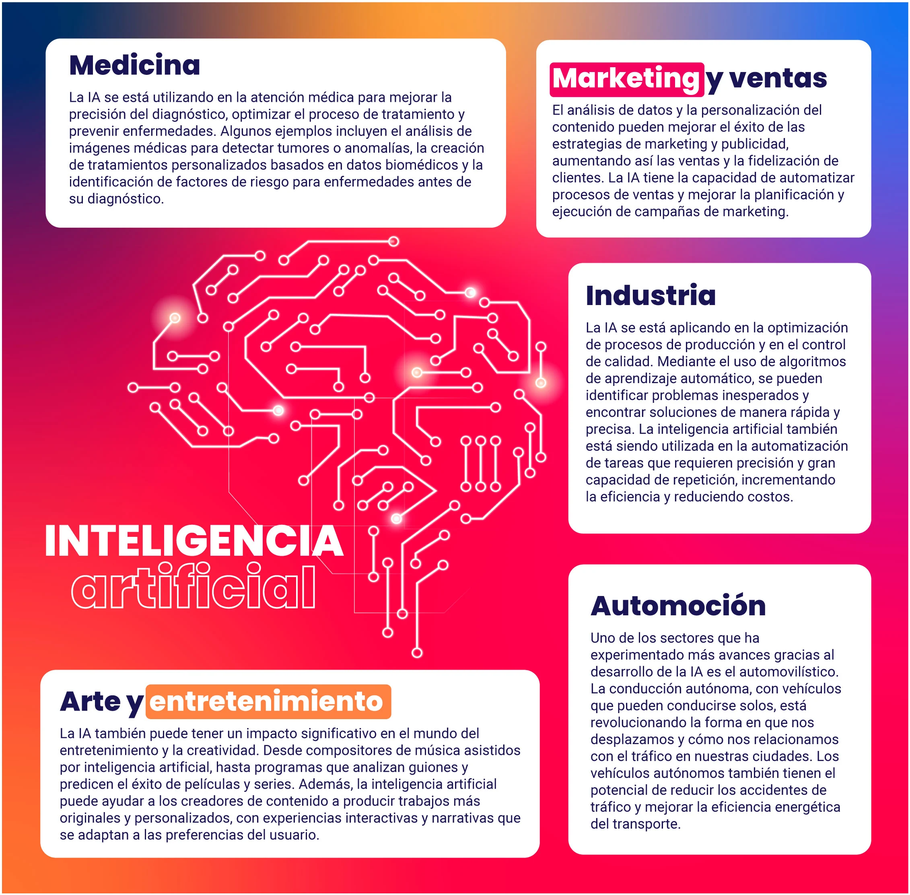

<!DOCTYPE html>
<html lang="es">
<head>
    <!--Meta no visible-->
    <meta charset="UTF-8">
    <meta name="viewport" content="width=device-width, initial-scale=1.0">

    <!--
        Enlaces a archivos CSS y JS
        <link rel="stylesheet" href="https://www.w3schools.com/w3css/4/w3.css">
        Agregado de manera local para poder usarlo sin internet
    -->
    <link rel="stylesheet" href="css/w3.css">
    <link rel="stylesheet" href="css/styles.css">

    <!--Elementos visibles-->
    <title>Inteligencia artificial</title>
    <link rel="shortcut icon" href="img/usbIcon.svg">
</head>
<body id="bodySection">
    <!--Barra de navegación lateral-->
    <aside class="w3-sidebar w3-bar-block w3-yellow sidebarWidthPosition shadowBorderExtern">
        <div class="sidebarCategorySpace">
            <h4 class="w3-bar-item w3-pannel w3-purple">Contenido en esta p&aacutegina</h4>
            <a class="w3-bar-item w3-button w3-hover-orange" href="#contexto">Un poco de contexto</a>
            <a class="w3-bar-item w3-button w3-hover-orange" href="#queEsInteligencia">¿Qu&eacute es la inteligencia artificial?</a>
            <a class="w3-bar-item w3-button w3-hover-orange" href="#prompt">¿Qué es un prompt?</a>
            <a class="w3-bar-item w3-button w3-hover-orange" href="#aplicacionesIA">Aplicaciones generales de la IA</a>
            <a class="w3-bar-item w3-button w3-hover-orange" href="#impacto">Impacto en la sociedad</a>
            <a class="w3-bar-item w3-button w3-hover-orange" href="#masInteligencia">Más sobre inteligencia artificial</a>
        </div>
        <div class="sidebarCategorySpace">
            <a class="textoSinAdornos" href="#bodySection"><h4 class="w3-bar-item w3-pannel w3-purple">Volver arriba &uarr;&uarr;&uarr;</h4></a>
    </aside>

    <!--Barra de navegación superior-->
    <nav class="w3-top shadowBorderExtern">
        <div class="w3-bar w3-red">
            <a class="w3-bar-item w3-orange" href="index.html">
                
            </a>
            <div class="w3-black w3-padding w3-card w3-right">
                <a class="w3-bar-item w3-button w3-hover-orange" href="index.html">Inicio</a>
                <div class="w3-dropdown-hover">
                    <a class="w3-button w3-hover-aqua" href="plataformasOnline.html">Plataformas online</a>
                    <div class="w3-dropdown-content w3-bar-block w3-card-4">
                        <!--Reemplazar los href por su id en plataformasOffline.html-->
                        <a class="w3-bar-item w3-button w3-hover-aqua" href="plataformasOnline.html#Waifu2x">Waifu2x!</a>
                        <a class="w3-bar-item w3-button w3-hover-aqua" href="plataformasOnline.html#chatGPT">Chat GPT</a>
                        <a class="w3-bar-item w3-button w3-hover-aqua" href="plataformasOnline.html#LALAL">LALAL.AI</a>
                        <a class="w3-bar-item w3-button w3-hover-aqua" href="plataformasOnline.html#midjourney">Midjourney</a>
                    </div>
                </div>
                <a class="w3-bar-item w3-button w3-hover-blue" href="sobreNosotros.html">Sobre nosotros</a>
            </div>
        </div>
    </nav>
    
    <!--Considerar reemplazar este div por un main, los article por section y reemplazar el main por un section-->
    <div class="sidebarSpace">
        <!--Sección de la imágen con el título-->
        <header class="w3-display-container w3-text-white w3-black navbarSpace">
            
            <h1 class="w3-padding w3-display-middle w3-xxxlarge">La Inteligencia Artificial</h1>
        </header>

        <!--Sección que contiene las tarjetas y el texto-->
        <main class="w3-content w3-blue w3-padding-32 w3-padding-large shadowBorderExtern">
            <article id="contexto" class="w3-padding w3-pannel w3-purple w3-margin-bottom">
                <h2 class="w3-padding-small w3-deep-purple">Un poco de contexto</h2>
                <p class="w3-padding-small justificacion">En estos últimos años vino haciendo ruido en las redes una locura que parece sacada de una película de ciencia ficción: la inteligencia artificial (IA para los amigos, AI para los wachines que hablan inglés). Seguro que habrás escuchado algo sobre ella (y si no lo hiciste es admirable la calidad del frasco en el que vives) ya sea en algún video de YouTube, en la radio, en redes hablando a cerca de esa foto falsa del Papa Francisco vistiendo una campera que lo hace voltear tremenda facha o habrás escuchado algo que comentó ese sobrino imbancable que sueña con ser influencer... Y así también habrás escuchado a unos cuantos paranoicos diciendo que en cualquier rato nos van a dominar las máquinas a lo <a href="https://acortar.link/cpZcrP" target="_blank">Skynet</a> o que junto a otras cosas, como la realidad virtual, ya vamos a estar consumidos a lo <a href="https://es.wikipedia.org/wiki/Matrix" target="_blank">Matrix</a>.</p>
                <p class="w3-padding-small justificacion">No arrugués que acá estoy para explicarte cómo está la movida y no tengas que estar hecho un Will Smith en <a href="https://es.wikipedia.org/wiki/Yo,_robot_(pel%C3%ADcula)" target="_blank">Yo Robot</a>, luchando en contra de la evolución de la tecnología y preocupado porque esta cosa macanuda te deje sin laburo, así que arranquemos aclarando qué es esto.</p>
            </article>
            <article id="queEsInteligencia" class="w3-padding w3-pannel w3-aqua w3-margin-bottom">
                <h2 class="w3-padding-small w3-indigo">¿Qu&eacute es la inteligencia artificial?</h2>
                <div class="w3-right w3-margin-left w3-margin-top">
                    <div class="w3-card">
                        
                        <div class="w3-container w3-indigo w3-center">
                            <p>Logo de Open AI</p>
                        </div>
                    </div>
                </div>
                <p class="w3-padding-small justificacion">Desde que salió Chat GPT 3.0 (el monstruo lanzado por la empresa Open AI) que todo esto de la IA vino cobrando revuelo en la boca de todo aquel que esté metido en el ambiente de la informática aunque sea viendo memes para soltar unas risas, pero Rolo el carnicero y muchos quedaron dudando qué es todo esto y porqué hay que estarle prestando atención. Sin profundizar mucho y sin ponernos técnicos, la inteligencia artificial se refiere al desarrollo de sistemas informáticos capaces de realizar tareas que normalmente suelen requerir inteligencia humana. Estos sistemas pueden aprender, razonar, tomar decisiones y adaptarse a nuevas situaciones por cuenta propia. Actualmente las cosas más flasheras que vas a poder ver son vehículos autónomos, <a href="https://youtu.be/hQFNn_Ky6CY?" target="_blank">robots bailando canciones de Amar Azul</a>, doblajes automáticos a otros idiomas y la generación de contenido por montones... Y aunque esto ya te viene acompañando desde hace años en la vida cotidiana en algo tan simple como un asistente virtual, la verdadera revolución la comenzarás a ver ahora porque hay un par de empresas compitiendo re fuerte por el mercado y están agregando herramientas con inteligencia artificial hasta en la sopa.</p>
                <p class="w3-padding-small justificacion">Dependiendo de en donde quieran aplicar esta tecnología que roza la magia, puede que tenga más o menos autonomía de acuerdo al conjunto de tareas que deba resolver, pero las inteligencias artificiales a las que puedes acceder con facilidad para poder usarlas a tu voluntad requieren algo clave que determina que es lo que hará esa bicha: <i>el prompt.</i></p>
            </article>
            <article id="prompt" class="w3-padding w3-pannel w3-orange w3-margin-bottom">
                <h2 class="w3-padding-small w3-red">¿Qué es un prompt?</h2>
                <div class="w3-right w3-margin-left w3-margin-top">
                    <div class="w3-card">
                        <div class="w3-container w3-indigo w3-center">
                            <p>Generado por DALL-E</p>
                        </div>
                        <div class="w3-content w3-display-container">
                            
                            
                            
                            
                            <button class="w3-button w3-black w3-display-left" onclick="cambiar(-1)">&#10094</button>
                            <button class="w3-button w3-black w3-display-right" onclick="cambiar(1)">&#10095</button>
                            <script src="js/main.js"></script>
                        </div>
                        <div class="w3-container w3-indigo w3-center">
                            <p><b>Prompt: <i></b>corazón conectado<br>a un par de parlantes</i></p>
                        </div>
                    </div>
                </div>
                <p class="w3-padding-small justificacion">No todas las inteligencias artificiales trabajan de manera autónoma o aplicando procesos de manera automática sobre un objetivo a cumplir, sino que otras requieren un <i>estímulo inicial</i> que definirá un objetivo para que la inteligencia artificial realice la tarea para la que fue creada, y ese estímulo es el famoso <i>prompt</i>. Un prompt en sí es básicamente tener una conversación con una IA, en donde le indicaremos que realice una tarea específica de la manera más detallada posible para guiar su comportamiento en la dirección deseada. Dependiendo de la inteligencia artificial, este prompt puede indicarle que responda preguntas, escriba código, genere imágenes, canciones, haga resúmenes y un ampliot etcétera que va desde resonderte un pavada hasta tirarte frases para chamuyar minitas cuando sos más lerdo que caracol chocado.</p>
                <p class="w3-padding-small justificacion">A la derecha de este texto podrás ver unas imágenes de ejemplo, fueron generadas usando <a href="#" target="_blank">DALL-E</a> a través de <a href="https://copilot.microsoft.com/" target="_blank">Bing Copilot</a>, una inteligencia artificial que implementa un conjunto de modelos creados por Open AI y que Microsoft implementó en su buscador y varios de sus productos con el fin de aumentar la productividad. Se usó un prompt demasiado simple pero que contiene la información justa y necesaria para obtener un resultado: "corazón conectado a un par de parlantes".</p>
                <iframe class="w3-right w3-margin-left" src="https://www.facebook.com/plugins/video.php?height=476&href=https%3A%2F%2Fwww.facebook.com%2FWebdelMaestroCMF%2Fvideos%2F7538405679615500%2F&show_text=false&width=357&t=0" width="300" height="380" scrolling="no" frameborder="0" allow="autoplay; clipboard-write; encrypted-media; picture-in-picture; web-share" allowFullScreen="true"></iframe>
                <p class="w3-padding-small justificacion">Ese prompt brinda bien la información fue la suficiente para obtener un resultado satisfactorio, pero todavía es bastante tosco si consideramos que podemos brindar algo mejor tomando en cuenta los componentes que debería contener un buen prompt: </p>
                    <ul>
                        <li><b>Contexto:</b> Información previa que se da para que la IA entienda mejor la tarea.</li>
                        <li><b>Instrucción:</b> Lo que quieres que la IA haga.</li>
                        <li><b>Ejemplos:</b> Muestras ejemplos de lo que esperas como resultado.</li>
                    </ul>
                <p class="w3-padding-small justificacion">Tomando en cuenta estas consideraciones es posible notar como algunos prompt pueden ser extremadamente simples mientras que otros pueden ser bastante complejos, ya que algunos pueden ser una pregunta directa carente de complejidad, mientras que otros pueden incluir múltiples instrucciones o información detallada para guiar la respuesta de la inteligencia artificial de manera muy específica hacia el resultado que nos interesa obtener.</p>
            </article>
            <article id="aplicacionesIA" class="w3-padding w3-pannel w3-orange w3-margin-bottom">
                <h2 class="w3-padding-small w3-red">Aplicaciones generales de la IA</h2>
                <p class="w3-padding-small justificacion">Aunque recién ahora estemos viendo que la inteligencia artificial se está volviendo algo masivo, esta lleva años conviviendo con nosotros dentro del ámbito empresarial siendo implementadas por empresas con el fin de tomar las desiciones más convenientes, optimizar procesos, realizar análisis de datos, atención al cliente, encargarse de la logística, etc. Las búsquedas en la web, las compras y la publicidad online llevan tiempo siendo administradas por IA con el fin de crear recomendaciones personalizadas para los consumidores basándose en sus búsquedas, intereses, compras previas y  contenido con el que interactúa en la red.</p>
                <div class="w3-right w3-margin-left" style="width: 50%;">
                    <div class="w3-card">
                        
                    </div>
                </div>
                <p class="w3-padding-small justificacion">Las traducciones automáticas entre idiomas se volvieron algo muy común de encontrarse en las redes sociales, ya sea que se traduzca generando subtítulos automáticamente o doblar el audio de un video utilizando una voz sintetizada y sincronizando los labios para un mejor resultado. </p>
                <p class="w3-padding-small justificacion">Dentro del ámbito de la salud, la inteligencia artificial se suele utilizar para identificar factores genéticos con el fin de anticipar enfermedades, también fue empleada para determinar posibles medicamentos efectivos contra el COVID-19 y, además, se está probando implementar en las radiografías digitales las mismas herramientas de inteligencia artificial que se utilizan en los análisis de entornos espaciales a partir imágenes bidimencionales, con el objetivo de poder visualizar áreas no visibles.</p>
                <p class="w3-padding-small justificacion">Estas herramientas también están siendo usadas para permitir que los vehículos autónomos se ubiquen espacialmente y poder simular entonrnos tridimencionales rápidamente, tal cual también se realiza en la producción de contenido multimedia en el área profesional.</p>
                
                <p class="w3-padding-small justificacion">En las redes vas a notar fácil muchos memes o algún que otro filtro de Tik-Tok hechos con inteligencia artificial, pero a menos que tengas el ojo entrenado, va a estar un poco difícil que notes que la IA ya forma parte de nuestras vidas y nos está acompañando todo el tiempo debido a que sus resultados son muy buenos, pero a pesar de que todas son cosas muy bonitas las que nos aportan como un simple individuo o una entidad empresarial, en la sociedad la cosa cambia un poco. </p>
            </article>
            <article id="impacto" class="w3-padding w3-pannel w3-light-green w3-margin-bottom">
                <h2 class="w3-padding-small w3-brown">Impacto en la sociedad</h2>
                <p class="w3-padding-small justificacion">Ya habiendo detallado las implementaciones que tuvo la inteligencia artificial en algunas áreas, ahora que es mucho más masiva, es de esperarse que tenga un impacto significativo y creciente en la vida cotidiana y en la sociedad en general. </p>
                <div class="w3-right w3-margin-left w3-margin-top">
                    <div class="w3-card">
                        
                    </div>
                </div>
                <p class="w3-padding-small justificacion">En la sociedad la aparición de la inteligencia pegó de otra manera un poco distinta, a pesar de que trajo ciertas ventajas como crear sectores completos con nuevos empleos, también trajo otras como el desplazamiento de empleos tradicionales debido a la automatización, principalmente en tareas repetitivas y manuales. A pesar de que la recolección y el análisis de datos ayudan mucho para mejorar la detección temprana de enfermedades, desarrollos de tratamientos, toma de decisiones judiciales, optimización de recursos naturales y energía, predicción de desastres naturales, mejora en la toma de decisiones gubernamentales y predicción de tendencias... También trajo consigo un aumento de valor para esos datos, llegando a producir riesgos de violación de la privacidad, aumento de la vigilancia masiva, abuso de datos personales, preocupaciones sobre la imparcialidad y transparencia de los algoritmos, amento del consumo energético por los centros de datos que soportan la IA, cambios y condicionamientos culturales mediante encapsulamiento y discriminación algorítmica, esta última llegando a producir también manipulación de la opinión pública. </p>
                <p class="w3-padding-small justificacion">Así como te conté, la inteligencia artificial tiene el potencial de transformar profundamente nuestra vida cotidiana y la sociedad en general. Nos trajo muchas oportunidades para mejorar la eficiencia, la conveniencia y la calidad de vida, pero también plantea desafíos importantes que deben abordarse. Estos incluyen la necesidad de garantizar la ética y la transparencia en el desarrollo de IA, la protección de la privacidad y la seguridad de los datos, y la gestión del impacto en el empleo y la economía. </p>
                <p class="w3-padding-small justificacion">Puede ser tan buena como mala, ya que en las manos equivocadas, puede beneficiar solo a unos cuantos... Es crucial que el desarrollo y la implementación de la IA se realicen de manera responsable y equilibrada, aprovechando sus beneficios mientras se mitigan sus riesgos. Pero mientras tanto vos mantenete informado y tratá de sacarle todo el jugo posible, que el que está jodido es aquel que no sepa usar la inteligencia artificial para facilitarse las cosas en el laburo y en su vida diaria. </p>
                </p>
            </article>
            <article id="masInteligencia" class="w3-padding w3-pannel w3-light-green w3-margin-bottom">
                <h2 class="w3-padding-small w3-brown">Más sobre inteligencia artificial</h2>
                <div class="w3-cell-row">
                    <div class="w3-cell w3-padding-small">
                        <iframe width="288" height="162" src="https://www.youtube.com/embed/W-TNwB8uUmE?si=DiMarAwppxkBpJuI" title="YouTube video player" frameborder="0" allow="accelerometer; autoplay; clipboard-write; encrypted-media; gyroscope; picture-in-picture; web-share" referrerpolicy="strict-origin-when-cross-origin" allowfullscreen></iframe>
                    </div>
                    <div class="w3-cell w3-padding-small">
                        <iframe width="288" height="162" src="https://www.youtube.com/embed/yAF3bopYMGk?si=kysNZJN03EnLHtti" title="YouTube video player" frameborder="0" allow="accelerometer; autoplay; clipboard-write; encrypted-media; gyroscope; picture-in-picture; web-share" referrerpolicy="strict-origin-when-cross-origin" allowfullscreen></iframe>
                    </div>
                    <div class="w3-cell w3-padding-small">
                        <iframe width="288" height="162" src="https://www.dailymotion.com/embed/video/x8jpy2b?autoplay=0" title="Dailymotion video player" frameborder="0" allow="accelerometer; autoplay; clipboard-write; encrypted-media; gyroscope; picture-in-picture; web-share" referrerpolicy="strict-origin-when-cross-origin" allowfullscreen></iframe>
                    </div>
                </div>
            </article>
        </main>
    </div>
    <footer class="w3-red shadowBorderExtern footerDown sidebarSpace">
        <div class="w3-content w3-padding-large">
            <div class="w3-row w3-content">
                <div class="w3-col l6 w3-margin-bottom">
                    <h4>Medios de contacto:</h4>
                    <ul>
                        <li><b>Celular: </b>+543834001122</li>
                        <li><b>Correo: </b><a href="mailto:serviciosalcliente@pincell.com">serviciosalcliente@pincell.com</a></li>
                        <li><b>Direcci&oacuten: </b>Siempre Viva 55</li>
                    </ul>
                </div>
                <div class="w3-col l6 w3-margin-bottom">
                    <h4>Nuestras redes:</h4>
                    <div class="w3-cell-row widthIconSocialMediaContainerFooter">
                        <div class="w3-cell">
                            <a href="https://facebook.com" target="_blank">
                                
                            </a>
                        </div>
                        <div class="w3-cell">
                            <a href="https://instagram.com" target="_blank">
                                
                            </a>
                        </div>
                        <div class="w3-cell">
                            <a href="https://x.com" target="_blank">
                                
                            </a>
                        </div>
                        <div class="w3-cell">
                            <a href="https://threads.net" target="_blank">
                                
                            </a>
                        </div>
                    </div>
                    <p class="w3-margin-top">© 2024 Company - Todos los derechos reservados</p>
                </div>
            </div>
        </div>
    </footer>
</body>
</html>